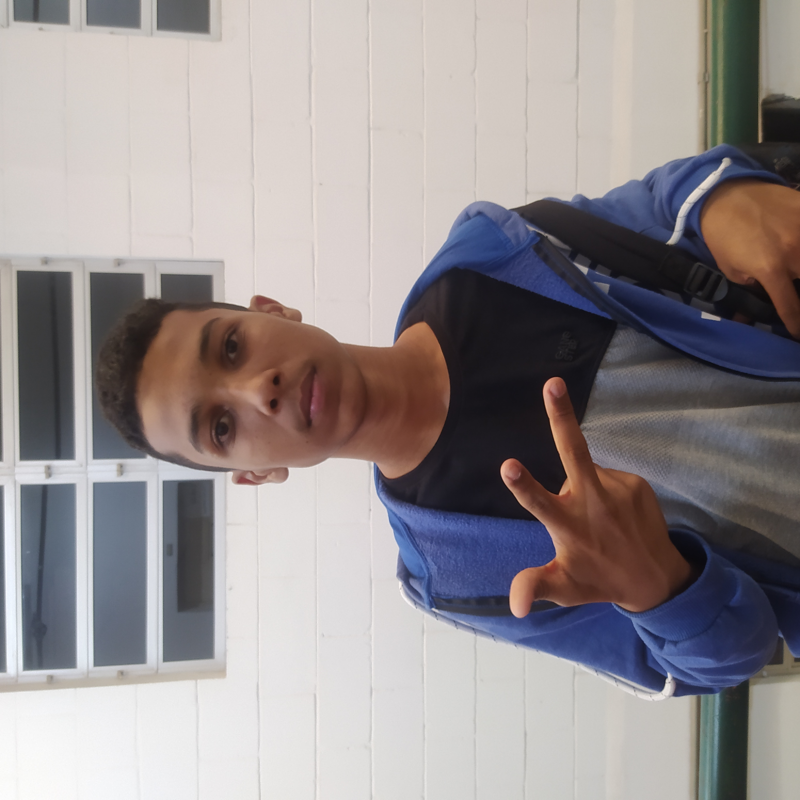

Criou a pagina Contato e login

Samuel
Criou a pagina Contato e login
Samuel Silva é um jovem de 15 anos com uma paixão crescente pela tecnologia e pela programação. Atualmente, ele está cursando Desenvolvimento de Sistemas no Instituto Federal de São Paulo, onde tem a oportunidade de aprofundar seus conhecimentos e habilidades na área de TI. Curioso e dedicado, Samuel está explorando as linguagens de programação HTML, CSS e Python, que considera fundamentais para sua formação.
Desde cedo, Samuel demonstrou um interesse marcante por tecnologia e inovação. Ele se destaca pela sua habilidade em aprender e aplicar novos conceitos de maneira rápida e eficiente. Além de seu envolvimento acadêmico, Samuel gosta de se desafiar com projetos pessoais, onde pode experimentar e testar suas ideias criativas.
Fora das salas de aula, Samuel é conhecido por seu entusiasmo contagiante e seu desejo de compartilhar o que aprende com os outros. Ele está sempre em busca de novos desafios e oportunidades para crescer profissionalmente e pessoalmente. Com uma visão clara de seu futuro na área de tecnologia, Samuel está determinado a se tornar um profissional de destaque e contribuir de maneira significativa para o mundo da informática.
Desde cedo, Samuel demonstrou um interesse marcante por tecnologia e inovação. Ele se destaca pela sua habilidade em aprender e aplicar novos conceitos de maneira rápida e eficiente. Além de seu envolvimento acadêmico, Samuel gosta de se desafiar com projetos pessoais, onde pode experimentar e testar suas ideias criativas.
Fora das salas de aula, Samuel é conhecido por seu entusiasmo contagiante e seu desejo de compartilhar o que aprende com os outros. Ele está sempre em busca de novos desafios e oportunidades para crescer profissionalmente e pessoalmente. Com uma visão clara de seu futuro na área de tecnologia, Samuel está determinado a se tornar um profissional de destaque e contribuir de maneira significativa para o mundo da informática.